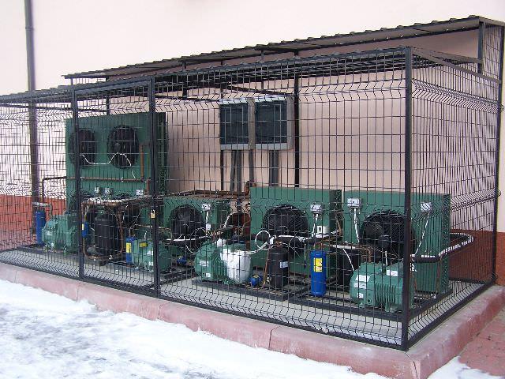

Klimatyzacja i chłodnictwo z głową.
Od 1997 roku.
Profesjonalny montaż, serwis i konserwacja klimatyzatorów LG, Gree, Daikin i Mitsubishi. Pompy ciepła, instalacje chłodnicze, komory i meble chłodnicze. Pracujemy w Bochni, Brzesku, Krakowie, Tarnowie i całej Małopolsce.

Marki, z którymi pracujemy
Pełen zakres usług klimatyzacyjnych i chłodniczych
Od doboru urządzenia, przez profesjonalny montaż, po serwis i obowiązkowe przeglądy okresowe - wszystko z jednej ręki.
Klimatyzacja domowa
Cisza, oszczędność energii i komfort cieplny przez cały rok - także grzanie zimą.
- Dobór mocy pod metraż i nasłonecznienie
- Montaż split, multi-split, kanałowych
- Estetyczne prowadzenie instalacji
Klimatyzacja biurowa i komercyjna
Wydajne systemy do biur, sklepów, gabinetów i obiektów użyteczności publicznej.
- Systemy VRF / VRV
- Klimatyzatory kasetonowe i kanałowe
- Centrale wentylacyjne z odzyskiem ciepła
Pompy ciepła
Wykonujemy montaż pomp ciepła powietrze–powietrze i powietrze–woda dobranych przez klienta lub projektanta.
- Profesjonalna instalacja zgodna z DTR
- Uruchomienie i pierwsze pomiary
Chłodnictwo przemysłowe
Komory chłodnicze i mroźnicze, meble chłodnicze, instalacje dla gastronomii i przetwórstwa.
- Komory z płyty warstwowej
- Agregaty Bitzer, Copeland, Maneurop
- Lady i witryny chłodnicze
Serwis i konserwacja
Obowiązkowe przeglądy F-GAZ, czyszczenie, dezynfekcja, naprawy, wymiana czynnika chłodniczego.
- Stałe umowy serwisowe dla firm
- Przeglądy okresowe dla domu
- Diagnostyka i naprawa awarii
Automatyka chłodnicza
Sterowniki, regulacja, monitoring temperatury - Danfoss, Carel, Castel.
- Sterowanie agregatami i komorami
- Modernizacje istniejących instalacji
- Doradztwo techniczne
Doświadczenie, które poznasz po pierwszym montażu
28 lat na rynku, certyfikat F-GAZ, autoryzacja UDT, tysiące zrealizowanych instalacji w Małopolsce i poza nią.
Lat doświadczenia
Działamy nieprzerwanie od 18 lipca 1997 roku.
Certyfikat UDT
FGAZ-P/12/0099/16 - wymagany do legalnego montażu i serwisu.
Kraje obsługi
Polska na co dzień, Słowacja i Czechy dla większych projektów.
Marki premium
LG, Gree, Daikin i Mitsubishi - sprawdzone, niezawodne urządzenia.
Profesjonalny montaż = pełna gwarancja producenta
W Polsce gwarancja producenta na klimatyzator obowiązuje tylko wtedy, gdy urządzenie zostało zamontowane przez firmę z certyfikatem F-GAZ. Klimatyzator kupiony na Allegro i zamontowany samodzielnie albo „przez kolegę z budowlanki” = brak gwarancji producenta. Po prostu nie zostanie uznana w razie awarii.
-
Pełna gwarancja producenta - montaż przez certyfikowanego instalatora F-GAZ jest warunkiem koniecznym, np. w LG, Daikin czy Gree. Wpisujemy się na karcie gwarancyjnej jako wykonawca - z tym dokumentem producent uzna gwarancję.
-
Nasza gwarancja na wykonanie - 24 miesiące na samą instalację (szczelność, mocowania, prowadzenie tras).
-
Obowiązkowe przeglądy F-GAZ - dla urządzeń z czynnikiem fluorowanym powyżej określonych progów przegląd jest wymagany prawem. Bez przeglądu możesz stracić gwarancję - i mieć problem przy kontroli.
Sprawdź nas w rejestrze UDT
Każdy może niezależnie zweryfikować nasze uprawnienia w publicznym rejestrze Urzędu Dozoru Technicznego.
Cztery kroki do komfortu
Od pierwszego telefonu do uruchomienia instalacji - bez niespodzianek.
Rozmowa
Dzwonisz lub piszesz - pytamy o metraż, oczekiwania, układ pomieszczeń.
Wycena
Wizyta w domu lub firmie, dobór urządzenia, konkretna wycena.
Montaż
Profesjonalny montaż z poszanowaniem Twojej przestrzeni - czysto i sprawnie.
Serwis
Przekazujemy działającą instalację, opiekujemy się nią w kolejnych sezonach.
Klimatyzacja w Małopolsce - i nie tylko
Na co dzień pracujemy w Bochni, Brzesku, Rzezawie, Krakowie, Tarnowie i okolicach. Dla większych projektów - komór chłodniczych, dużych instalacji przemysłowych - jeździmy po całej Polsce, do Słowacji i Czech.

Wybrane realizacje
Komory chłodnicze, jednostki zewnętrzne, lady chłodnicze, automatyka - fragmenty naszej codziennej pracy.


{kind=link}
{kind=link}
{kind=link}
{kind=link}
{kind=link}
{kind=link}
{kind=link}
{kind=link}
{kind=link}
{kind=link}
{kind=link}
F.H.U. Aircool - chłodnictwo i klimatyzacja od 1997
Założyciel firmy, Robert Szkliniarz, zajmuje się chłodnictwem od 1997 roku - najpierw przy komorach i agregatach przemysłowych, dziś również przy nowoczesnej klimatyzacji domowej i pompach ciepła.
Pracujemy z markami, do których mamy zaufanie i które serwisujemy długofalowo: LG, Gree (nasza rekomendacja jeśli szukasz dobrej relacji jakości do ceny), Daikin i Mitsubishi. W chłodnictwie stawiamy na sprawdzonych producentów: Bitzer, Copeland, Danfoss, Carel.
Działamy uczciwie - mówimy klientowi co jest mu naprawdę potrzebne, a nie co najdroższe. Stąd duża część nowych zleceń przychodzi z polecenia.
Pytania, które słyszymy najczęściej
Ile kosztuje montaż klimatyzacji?+
Zależy od metrażu, liczby pomieszczeń, marki urządzenia i stopnia trudności prowadzenia tras. Standardowy montaż splita w mieszkaniu (jednostka zewnętrzna obok okna) jest tańszy niż multi-split z długimi trasami przez kilka pięter. Po krótkiej rozmowie telefonicznej lub bezpłatnej wizycie podajemy konkretną wycenę.
Czy klimatyzator kupiony na Allegro będzie miał gwarancję?+
Tylko jeśli zamontuje go firma z aktualnym certyfikatem F-GAZ - i wpisze się na karcie gwarancyjnej. Samodzielny montaż albo „przez kolegę bez papierów” oznacza utratę gwarancji producenta. To nie jest tylko formalność: serwisy faktycznie odmawiają napraw gwarancyjnych, jeśli nie ma dokumentu od certyfikowanego instalatora.
Jaką markę polecacie?+
Najczęściej rekomendujemy Gree - ma najlepszą relację jakości do ceny i bardzo dobrą niezawodność na polskim rynku. LG wybieramy, kiedy ważna jest cisza pracy i wzornictwo. Daikin i Mitsubishi - przy wymagających instalacjach komercyjnych (VRF). Pracujemy też z innymi popularnymi w Polsce markami.
Jak długo trwa montaż?+
Standardowy split w mieszkaniu - zwykle jeden dzień. Multi-split w domu z 3–4 jednostkami wewnętrznymi - 1–2 dni. Większe instalacje VRF czy systemy chłodnicze - według indywidualnego harmonogramu, ustalanego po obejrzeniu obiektu.
Czy klimatyzacja może też grzać zimą?+
Tak - większość nowoczesnych klimatyzatorów to urządzenia z funkcją grzania (pompa ciepła powietrze–powietrze). Bardzo skutecznie dogrzewają mieszkanie wczesną wiosną i jesienią, a w łagodne zimy potrafią być głównym źródłem ciepła. Doradzamy modele z dobrą wydajnością przy niskich temperaturach.
Zadzwoń lub napisz - odpowiemy szybko
Najszybciej dogadamy się telefonicznie. Pomożemy dobrać urządzenie, umówimy bezpłatną wycenę.
32-765 Rzezawa
NIP: 868-102-58-20 · REGON: 850491570